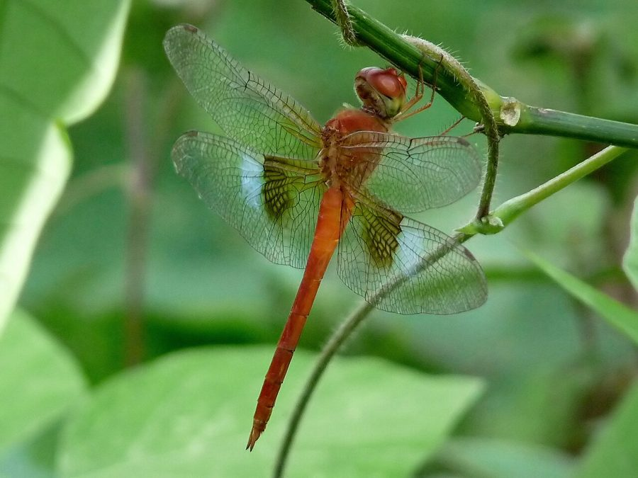

कोरल-टेल्ड क्लाउड विंगCoral-tailed Cloud Wing
Tholymis tillarga · Libellulidae · INS-0150

- Scientific name वैज्ञानिक नाम
- Tholymis tillarga (Fabricius, 1798)
- Family कुल
- Libellulidae
- Hindi हिंदी
- कोरल-टेल्ड क्लाउड विंग
- Local names स्थानीय नाम
- coral-tailed cloud wing, coral tailed cloud wing, wing
- Status here यहाँ की स्थिति
- native
- Movement आवागमन
- Resident, here all year
- Known from कहाँ दर्ज
- Others have published records from the wider Awadh–Purvanchal plain, none yet from Basti–Ayodhya अवध–पूर्वांचल से दूसरों के प्रकाशित अभिलेख, बस्ती–अयोध्या से अभी नहीं
- IUCN IUCN
- not evaluated
- Review समीक्षा
- audited and independently read
When to look कब देखें
Present all year. साल भर मौजूद।
Tell it apart from इनसे अलग पहचानें
कोरल-टेल्ड क्लाउड विंग / Coral-tailed Cloud Wing
Tholymis tillarga (Fabricius, 1798) — Libellulidae
कोरल-टेल्ड क्लाउड विंग — एक छोटी-मध्यम आकार की व्याधपतंग जिसके नर की पूँछ (abdomen) मूँगे के रंग की होती है। इसके पंख धुँधले या "cloud-like" होते हैं, जिससे इसका नाम "cloud wing" आता है। नर का शरीर गहरे रंग का होता है जबकि मादा हल्के रंग की होती है। यह पानी की सतह के पास कमज़ोर उड़ान करती है।
Quick Identification त्वरित पहचान
| Feature | Description |
|---|---|
| Size | Small to medium dragonfly (body 36–41 mm; wingspan 50–58 mm) |
| Build | Moderately robust; wings held open at rest |
| Wings | Notably clouded or smoky; not clear like most dragonflies |
| Male colour | Very dark brown to blackish body; coral or orange-red abdomen tip |
| Female colour | Brown to olive-brown; lighter than males |
| Abdomen tip | Male abdomen tip is bright coral or orange-red (diagnostic) |
| Behaviour | Weak, fluttering flight close to water surface; perches frequently |
Field tip: The combination of clouded (smoky) wings and coral-red abdomen tip in males is distinctive. Females are duller and harder to identify.
Morphology आकारिकी
Biometrics:
| Measurement | Range |
|---|---|
| Body length | 36–41 mm |
| Hindwing length | 25–29 mm |
| Wing span | 50–58 mm |
Adult male: Head and thorax very dark brown or blackish. Abdomen predominantly dark brown to black, becoming distinctly coral-red or orange-red at the tip (segments 8–10). Wings are distinctly clouded or smoky in appearance, particularly in the hindwings — a key diagnostic feature that sets this species apart from most clear-winged dragonflies.
Adult female: Head and thorax brown to olive-brown. Abdomen brown to olive-brown with darker markings. Wings similarly clouded. Less brightly coloured overall than males.
Behaviour & Ecology व्यवहार और पारिस्थितिकी
Tholymis tillarga is a small, weak-flying dragonfly of wetlands and water margins. It is highly specialized for weak, fluttering flight close to the water surface, where it hunts tiny flying insects. The species is a generalist, found in a wide variety of freshwater wetlands, and is moderately tolerant of disturbance.
Males are weakly territorial, perching frequently on vegetation or floating objects. Females forage among plants.
Larval Stage
Naiads are small, brown, and found in shallow water among vegetation. Larval duration is approximately 8–10 weeks. Emergence occurs year-round, with seasonal peaks.
Life Cycle / Phenology जीवन चक्र
| Stage / Season | Event |
|---|---|
| Egg (1–2 weeks) | Laid in shallow water |
| Naiad (8–10 weeks) | Among vegetation; preys on small aquatic invertebrates |
| Emergence (year-round) | Peaks March–May and September–November |
| Adult (2–3 weeks) | Forages close to water; perches; oviposits |
| Seasonality | Present year-round; activity peaks spring and post-monsoon |
Host Plants or Prey आहार
Adult prey:
- Small flies and midges
- Tiny mosquitoes
- Small flying insects
Larval prey:
- Small aquatic insect larvae
- Tiny crustaceans and worms
Predators / Natural Enemies शत्रु
- Birds: Small warblers and flycatchers
- Spiders: Wetland spiders
- Fish: Fish fry
- Larger insects: Larger dragonflies
Agricultural / Human Relevance कृषि प्रासंगिकता
Not documented as a pest. May assist in mosquito control in agricultural wetlands.
Expected Locally स्थानीय रूप से अपेक्षित
Not a field record. Written from published accounts for eastern Uttar Pradesh. No confirmed local sighting yet — if you have seen it, that is what the atlas needs.
अभी तक स्थानीय पुष्टि नहीं। यह विवरण प्रकाशित स्रोतों से है, किसी अवलोकन से नहीं।
GBIF holds published records from the wider Awadh–Purvanchal plain, none yet from Basti–Ayodhya. Expected in ponds and lake margins throughout eastern UP, year-round. Look for the dark dragonfly with the distinctive coral-red abdomen tip and clouded (smoky) wings, flying weakly close to the water surface. A photograph showing the coral tail and clouded wings clearly, with date and location, would confirm a local record.
Distribution वितरण
Global range: South and Southeast Asia; widespread from Pakistan and India to Myanmar, Thailand, and Indonesia.
In India: Common in plains.
In Uttar Pradesh: Scattered records.
In Basti district / eastern UP: Expected in suitable wetlands; unconfirmed locally.
Research Questions शोध प्रश्न
Anyone can investigate these | कोई भी इन प्रश्नों की जाँच कर सकता है
- Why are the wings clouded (smoky) in this species? — Speculate on thermoregulation, sun protection, or camouflage.
- क्या धुँधले पंख उड़ान के दौरान गर्मी नियंत्रण में मदद करते हैं? (Do clouded wings help with temperature regulation during flight?) — Measure wing surface temperature in sun vs. shade.
- Does wing cloudiness affect flight performance compared to clear-winged dragonflies? — Observe agility, flight duration, and prey capture success.
- पूँछ का मूँगा रंग कब विकसित होता है? (When does the coral tail colour develop?) — Collect newly emerged males; monitor colour development over days/weeks.
- कमज़ोर उड़ान होने के बाद भी यह प्रजाति शिकार को कैसे पकड़ती है? (How does this weak-flying species successfully hunt?) — Observe foraging behaviour; record prey capture frequency.
Similar Species मिलती-जुलती प्रजातियाँ
| Species | Key Difference | हिंदी |
|---|---|---|
| Trithemis pallidinervis | Purple-blue body (not dark); clear wings (not clouded); long legs | लंबी पिंडली व्याधपतंग |
| Orthetrum pruinosum | Pale pinkish, not dark; clear wings; white pruinose coating | पीली घंटी |
| Other Libellulidae | Clear wings (not clouded); various body colours | अन्य skimmers |
Field rule: Small to medium dragonfly with characteristically clouded (smoky) wings and dark body with bright coral-red abdomen tip (in males) distinguishes this species.
Taxonomy & Classification वर्गीकरण
Original description. Fabricius described Tholymis tillarga in 1798 in Supplementa Entomologiae Systematicae. Type locality: India. The genus Tholymis comes from Greek tholo- (vault, dome) possibly referring to wing shape or position. The species name tillarga is from a vernacular name.
Subspecies. Monotypic.
Family and order placement. Order Odonata, suborder Anisoptera, family Libellulidae.
Phylogenetic notes. Tholymis is a monotypic genus, containing only this species. It represents a distinct lineage within Libellulidae.
IUCN status rationale. Listed as Least Concern (LC). Broad range and stable populations in wetland habitats.
Photo Gallery फोटो गैलरी
No photos yet — add field photos to media/species/coral_tailed_cloud_wing/ and run node scripts/sync_photos.js.
Photos needed आवश्यक फोटो
- [ ] Male showing clouded wings and coral-red abdomen tip
- [ ] Female (showing duller coloration)
- [ ] Close-up of clouded wing venation
- [ ] Habitat (pond or lake margin)
References संदर्भ
- Fabricius, J.C. (1798). Supplementa Entomologiae Systematicae. Hafniae: Proft & Storch.
- Fraser, F.C. (1933). The Fauna of British India, including Ceylon and Burma. Odonata, Vol. 2. Taylor & Francis, London.
- Subramanian, K.A. (2005). Dragonflies and Damselflies of Peninsular India — A Photographic Guide. Vigyan Prasar, New Delhi.
- Prasad, M. & Varshney, R.K. (1995). A checklist of the Odonata of India. Oriental Insects, 29(1): 385–428.
- IUCN SSC Odonata Specialist Group. (2024). Tholymis tillarga. IUCN Red List of Threatened Species. Ver. 2024.
- GBIF Occurrence Data — Tholymis tillarga, Asia (2010–2025).
Source file: species/fauna/insects/coral_tailed_cloud_wing.md